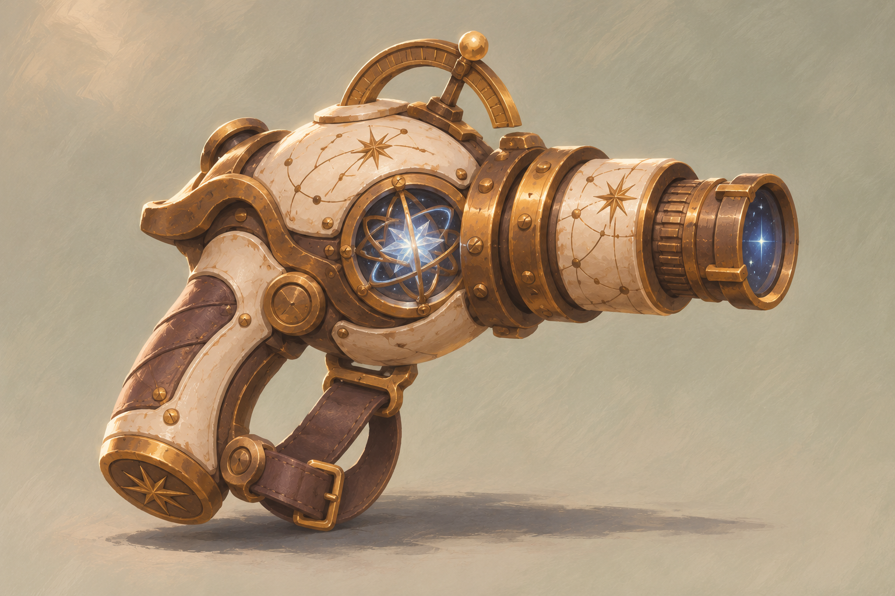
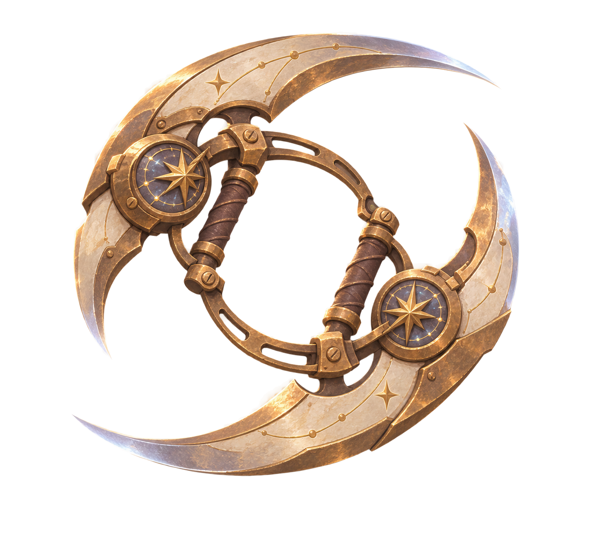
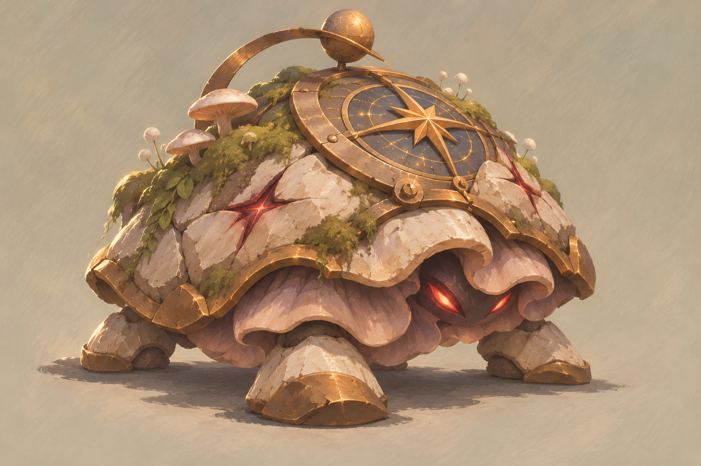
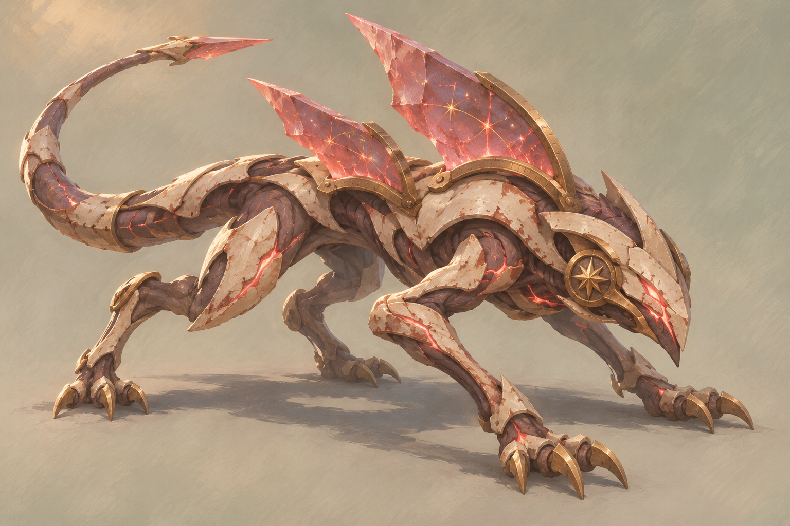

武器用形状与节奏区分，怪物用轮廓与预警表达威胁。概念图依据已认可角色画风生成，尚未成为动作图集。
全部 4 张：武器 2 张、怪物 2 张。可用上方分类直接切换。

青铜聚光器与蓝白星核。用短点射、细尾迹和清脆命中建立精准感；进化后才出现分裂轨迹。

新月铜刃、轻薄刃口与开放负形。轨迹内部保持透明，同一目标共享命中间隔，避免重叠虚增伤害。

圆钝低伏的孢壳与短足，用挤压伸展表现追击。初始生命 24、接触伤害 9，数值仍需正常试玩校准。

长身、后掠晶鳍和尾部形成方向感。先预警 0.8 秒，再直线冲刺，攻击中不突然转弯追踪玩家。